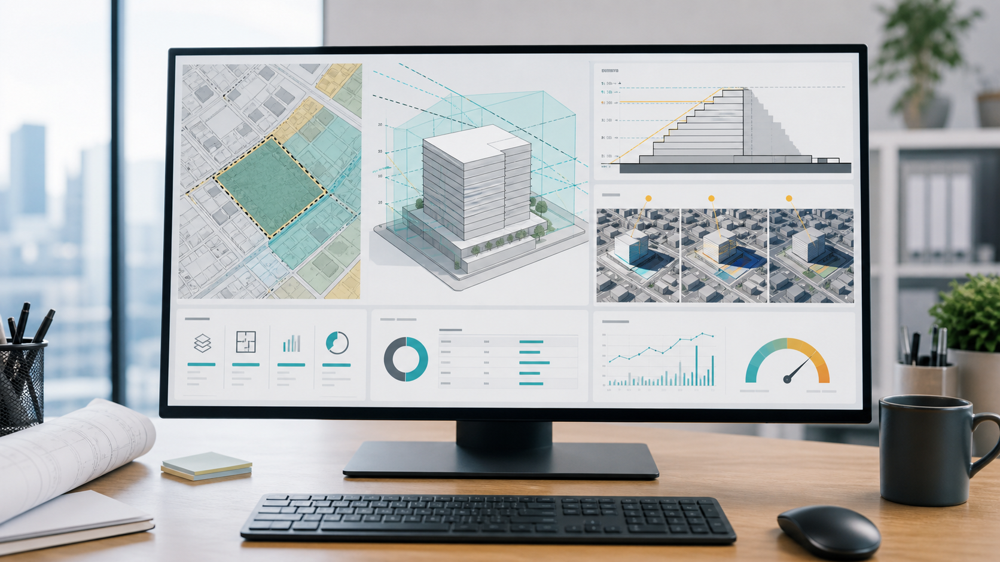

Comparison Column
不動産会社におすすめのボリュームチェックサービス比較｜用地仕入れ・開発検討向け
用地仕入れや開発候補地の初期検討では、設計会社へ正式にボリュームチェックを依頼する前に、建築可能規模や事業収支の当たりを素早く確認したい場面があります。ただしボリュームチェックサービスは、法規制や行政協議を完全に代替するものではなく、使い方を誤ると取得機会の損失や高値掴みにつながるため、リスクを理解したうえで利用する必要があります。

Comparison Table
サービス比較表
| 比較項目 | デベNAVI | VCプロ | TASUKI TECH LAND | ROOK2 |
|---|---|---|---|---|
| 提供会社 | つくるAI株式会社 | つくるAI株式会社 | 株式会社ZISEDAI（タスキグループ） | 生活産業研究所株式会社 |
| 概要 | 土地のボリュームチェック、開発前提価格の概算、物件情報の一元管理を支援する案件検討DXサービス。グループ会社につくる地所株式会社などの不動産開発・投資事業会社がある点も確認しておきたい。 | 不動産開発・設計業界向けのクラウドボリュームチェックツール。敷地や用途などの基本情報からAIが設計のたたき台となる図面を作成し、初期の建築ボリューム検討を支援する。 | 土地所有者や仲介事業者から届く用地・物件仕入情報をクラウドで一元管理し、都市計画情報の自動取得やAI-OCRで仕入検討を支援するSaaS。タスキグループは新築投資用IoTレジデンスの企画開発など不動産実業も行う。 | 土地活用や不動産営業向けに、敷地から建築ボリュームを自動算出し、斜線・日影・天空率などの法規確認、概算見積、収支計画、帳票出力まで支援するシステム。 |
| 主な機能 | 開発用地検索、法規制・用途確認、ボリューム検討 | AIボリューム図面作成、3D鳥かご図、図面・データ出力 | 用地仕入れ支援、AIボリュームチェック、事業収支検討 | 建築ボリューム自動算出、斜線・日影・天空率チェック、概算見積・収支計画 |
| できること | 開発用地検索：開発候補地を地図上で探し、用途や立地条件を確認できます。 法規制・用途確認：対象地の用途地域、建ぺい率、容積率など開発検討に必要な条件を確認できます。 ボリューム検討：敷地条件から建築可能性や事業規模の初期検討を行えます。 | AIボリューム図面作成：敷地や用途などの基本情報を入力し、AIが設計のたたき台となるボリューム図面を作成できます。 3D鳥かご図：建築可能範囲を3Dで確認し、敷地条件に対する建物ボリュームの初期検討に使えます。 図面・データ出力：検討結果をPDFやCAD編集に使うデータとして出力し、設計会社への確認や社内検討につなげられます。 | 用地仕入れ支援：開発候補地の情報収集、比較、管理を支援します。 AIボリュームチェック：敷地条件から建築ボリュームや事業可能性を短時間で確認できます。 事業収支検討：取得価格、建築費、販売価格などの前提を置いて開発収支の検討に使えます。 | 建築ボリューム自動算出：敷地を設定し、断面計画などの条件から建築ボリュームを自動で算出できます。 斜線・日影・天空率チェック：斜線、日影、天空率などの規制を確認し、建築可能性の初期判断に使えます。 概算見積・収支計画：ボリューム検討から概算見積、収支計画、提案帳票の作成までつなげられます。 |
| 対象プロセス | 不動産仲介、不動産購入、不動産開発/不動産運用 | 不動産購入、不動産開発/不動産運用 | 不動産購入、不動産開発/不動産運用 | 不動産購入、不動産開発/不動産運用 |
| 対応業務 | ソーシング、初期スクリーニング、価格妥当性確認、DD管理、事業企画、用途検討、事業収支作成、物件情報整理 | 初期スクリーニング、価格妥当性確認、DD管理、事業企画、用途検討、事業収支作成 | ソーシング、物件情報整理、価格妥当性確認、DD管理、事業企画、用途検討、レポーティング | 初期スクリーニング、価格妥当性確認、DD管理、事業企画、用途検討、事業収支作成 |
| アセットタイプ | 土地、賃貸住宅、マンション、オフィス | 土地、賃貸住宅、マンション | 土地、賃貸住宅、マンション | 土地、賃貸住宅、マンション、住宅 |
Guide
比較の観点
リスクを先に理解する
ボリュームチェックサービスは、取得候補地を早くふるい分けるための強力な補助ツールです。しかし、建築可能面積や戸数の計算は法規制データ、道路条件、敷地形状、自治体条例、行政協議、設計上の工夫に左右されます。システム結果だけで買付可否や設計依頼の有無を決めると、取得機会の損失や取得後の事業計画崩れが起こり得ます。
法規制データの限界
国土交通省の不動産情報ライブラリなどで都市計画情報の公開は進んでいますが、建築ボリュームの判断には用途地域だけでなく、防火・準防火地域、地区計画、高度地区、都市計画道路、前面道路、接道、斜線、日影、天空率、自治体条例、窓先空地、避難経路などが関係します。公開データや自動取得データだけでは、実務上の確認範囲をすべてカバーできない可能性があります。
過小判定と過大判定のリスク
システムのボリュームチェックが過小だと、本来取得できた案件を見送ることになり、仕入機会を失います。反対に過大だと、想定より建てられず、土地価格を高く見積もる、買付条件を誤る、取得後に収支が崩れる、金融機関や投資家への説明が難しくなるといったリスクがあります。どちらも用地仕入れでは大きな損失につながります。
設計会社へ依頼する判断
取得検討時に設計会社へ正式なボリュームチェックを依頼するかどうかの判断材料として使う場合、システム結果を足切りに使いすぎないことが重要です。特に旗竿地、不整形地、狭小地、複数道路、斜線や日影の影響が大きい土地、条例対応が重い共同住宅では、システムで低く出た案件ほど専門家確認へ進める余地があります。
その他の確認ポイント
入力した案件情報の機密性、提供会社またはグループ会社の不動産実業との関係、対応エリア、データ更新頻度、対応する条例範囲、計算ロジックの説明可能性、CADやPDFへの出力、設計会社との連携、社内稟議での使い方を確認します。最終的な取得判断では、システム結果、設計会社の検証、行政確認、測量・境界・道路調査を分けて扱う運用が必要です。
参考リンク
- tsukuru-ai.co.jp/deve-navi参考リンク
- tsukuru-ai.co.jp/vc-pro参考リンク
- tasukicorp.co.jp/news/8550参考リンク
- www.cstnet.co.jp/archi/products/rook/index.html参考リンク
- www.cstnet.co.jp/archi/products/rook/architects.html参考リンク
- www.mlit.go.jp/tochi_fudousan_kensetsugyo/tochi_fudousan_kensetsugyo_tk17_000001_00038.html参考リンク
- www.reinfolib.mlit.go.jp/help/apiManual参考リンク
- www.mlit.go.jp/jutakukentiku/house/content/001907399.pdf参考リンク